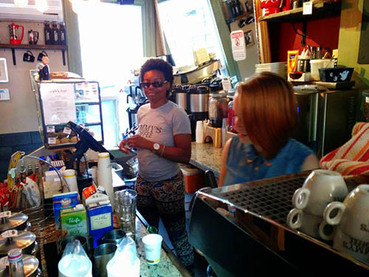

About Us
Jimmy’s Coffee was born on December 6, 2009 at 107 Portland Street in Downtown Toronto. Phil Morrison (a serial entrepreneur, coffee enthusiast, and founder of Jimmy's Coffee) wanted to create a cool coffee place with a sense of community. He found the home of Jimmy’s in complete disarray, gave it some love, and created a new hub of coffee and relief for the hectic Downtown King Street West area. Since then, Jimmy’s has gone on to open two more locations, Kensington Market and Bay & Gerrard, in just over two years with no sign of stopping!
From outstanding coffee, to delicious edibles, to entertaining conversation with baristas and patrons alike, Jimmy’s prides itself on giving you a great coffee experience from the moment you walk in the door.
Jimmy’s Coffee is so proud of appearing in NY Times, Eye Magazine, and Now Magazine. Our stores are regularly ranked in the Top 10 Independent Coffee Joints in Toronto.
The Team
Jimmy’s has a fantastic group of unique individuals with a passion for coffee and spectacular customer service. It won’t take many visits before they'll know your name and order.
They want you to have a good cup of coffee – let them make it for you! They enjoy your company - talk to them! Find out more about them here!
The Machine
Used at the World Barista Championships, our machine, “Aurelia” by Nouva Simonelli, is much like everything at Jimmy’s Coffee: fast and practical, while delivering great performance with a sleek design.
It will satisfy your aesthetic and coffee tastes.
The Grinder
Grinders are just as, if not more, important than your machine. A poor grinder can inadvertently heat the coffee – destroying the oils that make for great aroma, body and flavour. It can have an inconsistent grind that will make your shots pull funny.
That's why, at Jimmy's, we like to treat our beans right.
So let us introduce the Mazzer Robur:
- Hopper: 1.8 kg.
- Weight: She’s a beast.
- Burrs: Conical burrs which allow it to grind effectively while rotating relatively slowly, usually below 500 rpm, reducing frictional heating of the ground coffee, thus preserving maximum aroma.
- Time to grind a 19g double shot: 3.05 SECONDS.
The Beans
Our staff have tried all the beans that you can think of and all the ones you can’t. We chose Classic Gourmet Coffee (Ranked consistantly on BlogTO's list of Top Roasters).
They built the first coffee plant in North America made entirely of stainless steel from start to finish, with the consideration of conservation of energy and resources, ultimately producing consistently superior beans at the end of the roasting process. They create outstanding coffee, and we have the best team to take their vision and put it in your cup. Find out more here!
Portland Location
Located in a refurbished victorian town house in the heart of the King West community, the first store in the Jimmy's Coffee legacy was first opened on December 9th 2009.

Welcomed by the community with open arms, Jimmy's has become the coffee hub for creatives, entrepreneurs and hard working King West-ers needing a well deserved break, and we're so proud to be there for you when you need us most!
If it's hot outside, our back patio is a must. A small secluded spot, the patio is both a great place to catch the sun and some peace and quiet, and is a popular evening spot after work.
- Call us: 416-901-2289
- Email us: portland@jimmyscoffee.ca
- Opening Times: 7am - 8pm Every Day
- Find us: 107 Portland Street
- Yes! We have Wi-Fi & Outlets!
Baldwin Location
The middle child in the Jimmy's Coffee legacy , Jimmy's on Baldwin opened in March 2013 in Kensington Market, the heart of downtown Toronto.
This location boasts a large welcoming space with a huge back patio, perfect for those once in a lifetime days when Toronto is warm
When it's inevitably cold, curl up with a book in front of our cute fire, or relax and chat over one our famous coconut milk lattes
Kensington Market itself is the perfect destination spot for locals and tourists alike. Whether you're in the market to do your groceries, eat delicious tacos, or just to people watch, Jimmy's is always the perfect accompaniment.
- Call us: 416-901-2289
- Email us: baldwin@jimmyscoffee.ca
- Opening Times: Mon-Sat: 7am - 7pm, Sun: 8am - 7pm
- Find us: 191 Baldwin Street
- Yes! We have Wi-Fi & Outlets!
Gerrard Location
The newest addition to the Jimmy's legacy, Jimmy's on Bay & Gerrard is located at 84 Gerrard St. West, one west of Bay Street.
Nestled amongst hospitals, offices and condos, the newly renovated heritage building boasts three floors, including a study lounge and boardroom (Available for Rent) for those extra special meetings, all while still retaining the style and qualities unique to Jimmy's.
The turn out and enthusiasm at our third coffee shop has been better than we could have imagined, and we look forward to getting to know our neighbours and having the pleasure of serving you the best coffee in Toronto
- Call us: 416-792-1141
- Email us: gerrard@jimmyscoffee.ca
- Opening Times: Mon - Fri: 6:30am - 8pm, Sat - Sun: 8am - 6pm
- Find us: 84 Gerrard Street West
- Yes! We have Wi-Fi & Outlets!
Yes, We're Hiring!
Jimmy's Coffee may well be the best coffee you'll ever have, but without great people, it's nothing. We're always looking for fresh faces to add to the Jimmy's roster.
With three locations across Toronto, we need the best of the best to provide the excellent coffee and spectacular service our customers have come to expect.
Working at Jimmy's Coffee, you'll face hoards of caffine-deprived customers, desperate for miracle nectar you provide. You'll need to serve every one of them with lightning speed, style, a smile, and the most groan-worthy jokes you can think of!
Daydream about coffee, work your butt off every day, and love making peoples day, even at 6 in the morning? Give us your details down below, we WANT to talk to you!
Never touched a coffee machine, but can learn quickly and roast a coffee bean from 40 paces with your wondrous charm and dazzling smile? Let us know, we can teach you the ways of the (coffee-based) Force!
We look forward to seeing what you can offer us and our customers!